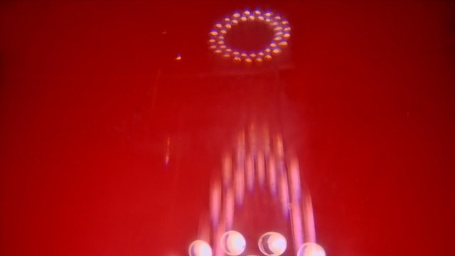

Case Study 01
화장품 캡
화장품 캡
웰드 라인 불량 개선
화장품 용기 캡 사출 성형 현장에서 발생한 웰드 라인 불량을 NexTech AI로 진단하고 개선한 사례입니다.
1
불량 발생 — 정성적 시도 반복
화장품 캡 성형 과정에서 웰드 라인이 반복 발생했습니다. 용융 온도, 금형 온도, 사출 속도를 경험적으로 조정하는 시행착오를 반복했지만, 정량적 기준이 없어 재현성이 낮았습니다.
2
데이터 입력 및 AI 학습
웰드 라인 불량이 발생한 실제 공정 조건과 현장 노하우를 NexTech AI에 입력했습니다. 데이터 특성에 맞는 알고리즘이 자동 선택되어, 초기 조건의 불량 위험도를 즉시 진단했습니다.
3
AI 최적 조건 도출
역추론 최적화 알고리즘이 웰드 라인 위험도를 최소화하는 공정 조건을 자동 탐색했습니다. 초기 위험도 80%에서 8%로 낮추는 개선 조건을 수 초 만에 도출했습니다.
4
현장 적용 및 육안 검증
AI 추천 조건을 실제 사출기에 적용해 투명·유색 소재 모두 시험 성형했습니다. 개선 전후 실물을 비교한 결과, 웰드 라인이 육안으로도 확연히 줄어든 것을 확인했습니다.
개선 결과 요약
기존 웰드 라인 불량 위험도
80%
개선 전 실제 사출 공정 조건
AI 최적화 후 위험도
8%
AI 역추론 최적화 적용 조건
▼ 72%p 감소 (90% 저감)
조건 도출 소요 시간
<5초
기존 수 시간의 시행착오 → 수 초
▼ 99% 단축
개선 전후 실제 성형품 비교
투명 소재 — 웰드 라인이 육안으로 뚜렷하게 확인
Before

위험도 80% · 웰드 라인 자국 뚜렷
After

위험도 8% · 웰드 라인 흔적 소거
유색 소재 — 안료로 가려져도 AI가 위험도로 정량 검증
Before
개선 전 조건 성형품
After

AI 최적 조건 성형품
* 화장품 용기 캡(Cosmetic Cap) 실제 사출 성형 데이터 기반 사례이며, 협력사 성형 데이터 제공에 협조해주신 콜마 연우(Yonwoo Korea)에 감사드립니다.